왜 이렇게 배치했는가
pullim-planner.vercel.app기준 commit:
bcec55b (PR #15 · audit #8)
풀림 플래너는 시간표 앱이 아니다. 자기조절을 도구화한 학습 플라이휠로,
"오늘의 결정(다음 블록·컨디션·번아웃)"이 첫 시야에 들어오게 IA가 짜여 있다.
이 문서는 핵심 7개 화면을 desktop 1280 + mobile 375 두 viewport로 캡처해,
어떤 컴포넌트가 어디에 왜 있는가를 코드(commit bcec55b)·런타임 동작과 함께 역추적한다.
"다음 학습 블록 hero"·"컨디션 슬라이더"·"번아웃 카드"가 시간표보다 먼저 또는 동일 우선순위로 노출. 사용자가 매일 내려야 할 결정을 화면 위계로 가시화.
컨디션 보고 → 블록 난이도 ±20% 자동 조정, 번아웃 임계 도달 → 휴식 제안. 시간표가 하루치 결과(정답률·감정·시간)를 받아 내일 플랜에 자동 반영.
모든 블록에 학습과학 엔진 태그(간격 복습·인지 부하·능동 회상…). 태그 클릭 → "왜 이 엔진?" 원리 모달. 결정 근거가 사용자에게 열림.
day/week/month/reports 모두 동일 grid (xl:grid-cols-[420px_1fr]). 뷰 토글 시 시각 흔들림 0 — 인지 부담 최소.
/planner — 일간 캘린더 (day view)
src/app/(student)/planner/page.tsx + views/day-view.tsx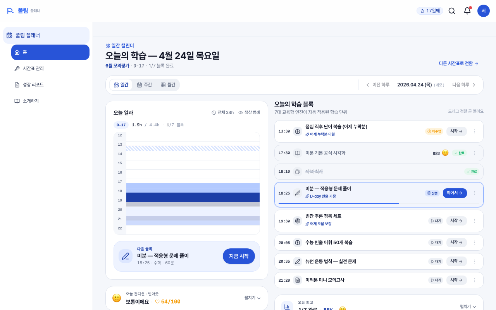
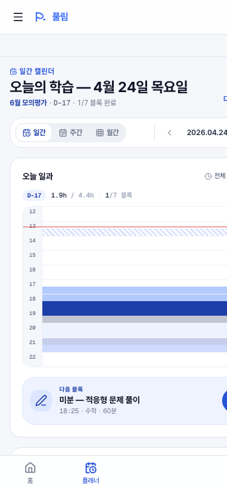
레이아웃 결정 2-col @ xl
- 좌(420px 고정): 시계 카드(24h side timeline) + 다음 블록 hero + 컨디션 슬라이더 + 번아웃 카드 — 결정 표면 4종을 좌측 컬럼에 묶음
- 우(1fr): 오늘 블록 리스트(SectionHeading + BlockCard × N) — 실행 영역
- ≤ xl 브레이크포인트(1280px): 1열 vertical — 시계 → 다음 블록 → 컨디션 → 번아웃 → 블록 리스트 순. 결정 → 실행 순서 보존
핵심 컴포넌트
CalendarShell — view 토글(일/주/월) + navLabel + action(전환 link)SideTimeline24 + trimToBlocks (audit #5)nextActiveBlock() → 그라데이션 카드 + "지금 시작"ConditionBurnoutPanel — slider × 5단계, ±20% 자동 조정BlockCard — 시각 / 제목 / 엔진 태그 / 상태 칩 / CTATodayReflection ribbon — 학습 완료 시 자동 expand왜 시계가 좌측에 있나
- 점유 시각화 우선 — "오늘 몇 시간 학습이 잡혀있는가"를 1초 안에 인지하게 함. 24h 격자에 형광펜처럼 학습 셀이 채워진 형태가 메타포 핵심.
- D-day · 학습 시간 · 완료율이 시계 헤더에 작은 배지로 묶임 — 의사결정에 필요한 메트릭 3종이 시계와 동일 시야에 있게.
- audit #5(2026-05-14)에서 첫·마지막 일정 ±1h trim 도입으로 빈 새벽·심야 셀이 사라짐. 토글로 24h 전체 복귀 가능 (정보 손실 0).
/planner?view=week — 주간 캘린더
views/week-view.tsx + layouts/active-week-layout.tsx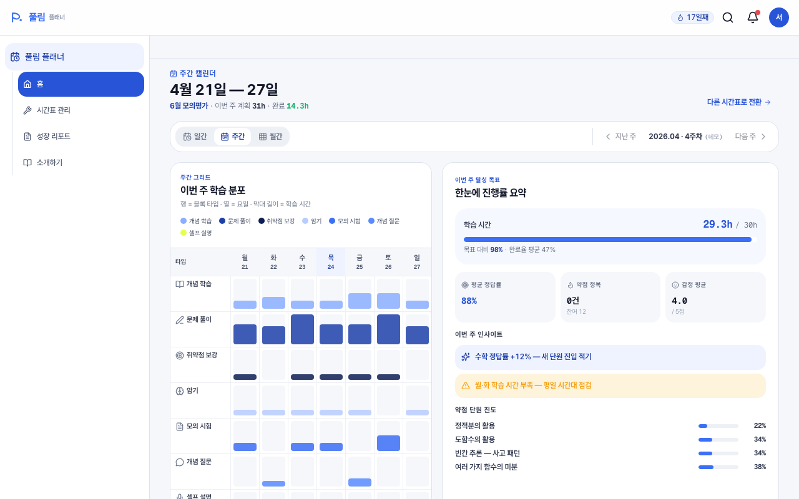
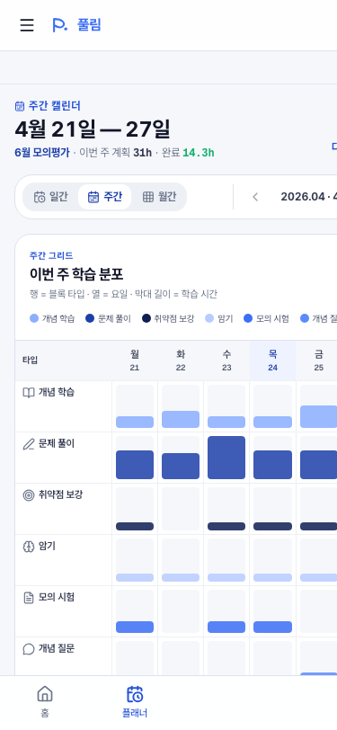
왜 동일 grid를 재사용했나
- day/week/month 모두
xl:grid-cols-[420px_1fr]동일 비율 — 뷰 토글 시 사용자 시선이 같은 위치를 유지하게 만듦. - 좌측 컬럼은 "시간 점유의 시각화"라는 한 가지 역할로 통일 (시계 / 그리드 / 히트맵 — 단위만 다름).
- 우측 컬럼은 "이번 단위의 목표·메트릭"이라는 한 가지 역할로 통일 (오늘 블록 리스트 / 주간 목표 / 월간 진행).
주간 전용 결정
- 4종 layout 선택지 —
weekLayoutId에 따라 grid/bar/list/compact 변형. 사용자 커스터마이즈 룰. bar_week선택 시 하단WeeklyChart자동 숨김 — 시각 중복 제거.- 오늘 열(today column)은 파랑 강조로 "지금 어디"를 표시.
/planner?view=month — 월간 히트맵
views/month-view.tsx + month-heatmap.tsx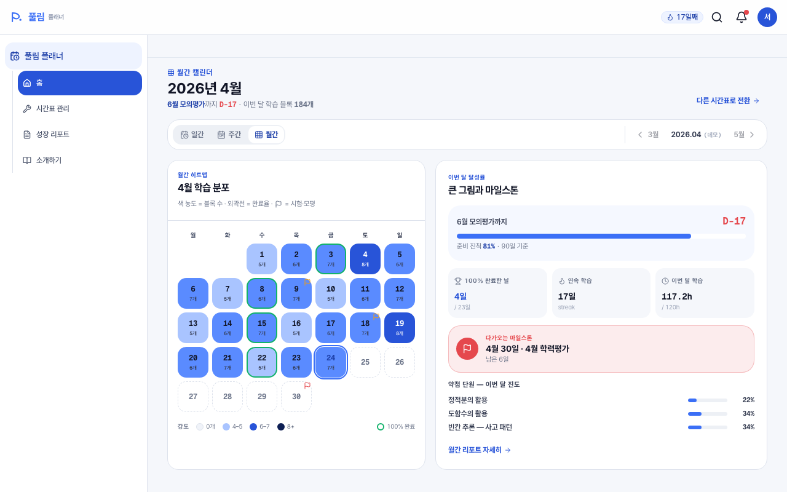
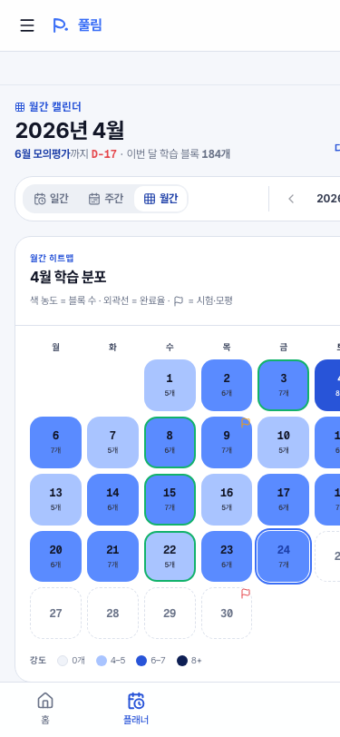
왜 히트맵인가
- 30일을 한 화면에 — 학습 집중도를 색 밀도로 즉시 인지. 7×5 grid가 monthly cognition에 자연스러움.
- D-day 깃발 마커로 시험 일정을 히트맵 위에 overlay — "남은 학습 일수"가 별도 카드 없이도 한 시야.
- 우측
MonthlyProgressCard는 "이번 달 누적 블록 수 / 목표"라는 한 가지 메트릭만 — 노이즈 최소. - day/week 대비 정보 밀도가 의도적으로 낮음 — 월간은 "큰 그림" 모드이지 실행 모드가 아니라는 것이 메타포.
/planner/manage — 다중 시간표 관리
app/(student)/planner/manage/page.tsx + planner-manage/planner-card.tsx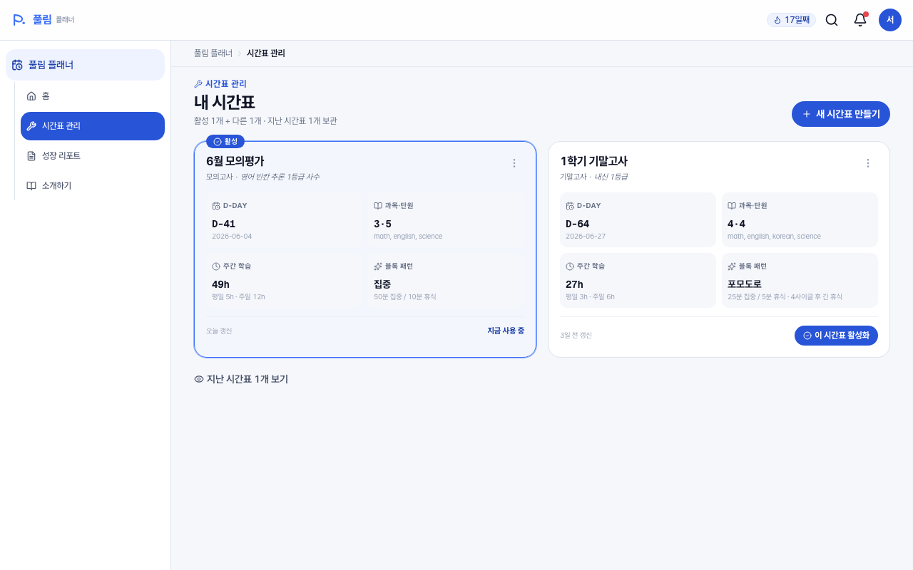
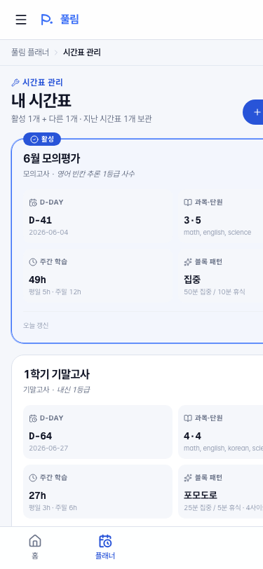
왜 카드 그리드인가
- "수능 D-90" / "6월 모의" 같은 여러 학습 사이클을 동시에 운영하는 페르소나 가정. (Plan 3 본구현)
- 활성 카드는 시각 강조 + "현재 사용중" 배지. 한 번에 하나만 active — 인지 혼동 0.
- CRUD 5종(수정 · 복사 · 활성화 · 아카이브 · 삭제)이 카드 내 menu로 묶임. 활성 카드 삭제 차단은 toast로 가드.
아카이브 토글
- 지난 시간표는 default hidden — "Eye / EyeOff" 토글로 회고용 보존 카드 노출.
- "📦 아카이브" 토스트로 "회고용으로 보존됩니다" 안내 — 삭제 ≠ 아카이브 구분 명시.
- archive된 카드는 활성화 불가 + 복원 액션 필요 (의도된 friction).
/planner/manage/new — 빌더 (8단계 wizard)
components/planner-builder/step-content.tsx · step-indicator.tsx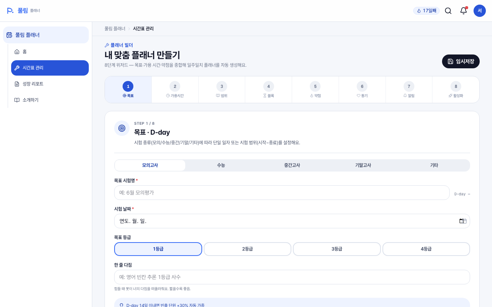
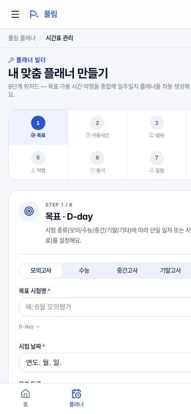
왜 8단계로 쪼갰나
- 1) 목표 — 시험명·유형·D-day. "왜 학습하는가"를 먼저 묶음.
- 2) 시간 — 주간 학습 가능 시간. 학습 capacity 정의.
- 3) 과목·단원 — 학습 범위. (audit #7로 SubjectCard min-h 통일, 2026-05-18)
- 4) 블록 패턴 — 집중·분산 등 3종 spec. 학습과학 결정 1단계.
- 5) 약점 자동 반영 — 어제 정답률 기반 다음날 분배.
- 6) 동기 스타일 — 보상 톤 결정 (push 문구·이모지).
- 7) 알림 — 카톡·푸시·5분 전·부모 보고 4종.
- 8) 미리보기·활성화 — 일주일 preview 카드 + 활성 토글.
배치 의도 — 결정 부담 분산
- 한 화면에 결정 1~2개만 — 인지 부하 최소. 단계 indicator로 현재 위치 가시화.
- Step 8 미리보기는 "내가 만든 시간표가 어떻게 보일지" 결과를 commit 전 노출 — 결정 후회 비용 ↓.
- audit #7(2026-05-18)에서 Step 3 SubjectCard
min-h-[150px]통일 + Step 8 empty section flex 중앙으로 빈 상태 정합 회복.
/planner/onboarding — 정체성 5요소
app/(student)/planner/onboarding/page.tsx + shell/onboarding-template.tsx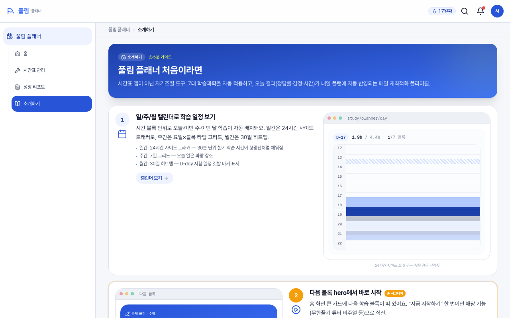
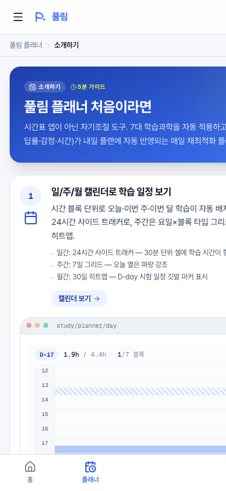
5 step · 정체성 정의
- 1) 일/주/월 캘린더 — "시간 블록 단위로 자동 배치" 메타포 도입. 24h side tracker preview.
- 2) 다음 블록 hero (signature) — "지금 시작" 1tap. 이 화면이 풀림 플래너의 진짜 정체성.
- 3) 컨디션 슬라이더 — 자기조절 input. ±20% 조정 룰 가시화.
- 4) 번아웃 카드 + "쉴래요" 1-tap — 임계 도달 → 시스템 먼저 휴식 제안.
- 5) 7대 학습과학 엔진 — 블록 카드 엔진 태그 클릭 → 원리 모달. 교육적 투명성 5요소 마지막.
왜 mock browser 안에 실제 컴포넌트를 넣었나
MockBrowser는 "이 화면이 production에서 어떻게 보이는지" 미리보기 frame.- 온보딩 step 본문은 텍스트 설명이지만, 우측 preview는 실제 SideTimeline24 · ConditionSlider · BurnoutCard · PedagogyTag 컴포넌트를 그대로 사용. 마케팅이 아닌 실물 데모.
- 완료 CTA →
/planner로 직진. "지금 바로 사용 가능"을 흐름 자체로 증명.
/planner/reports — 회고 (day / week / month)
app/(student)/planner/reports/page.tsx + reports/*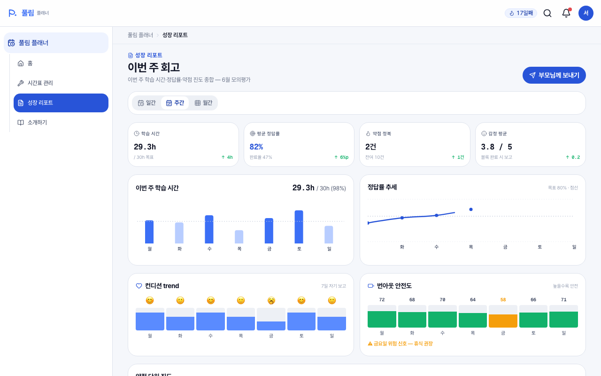
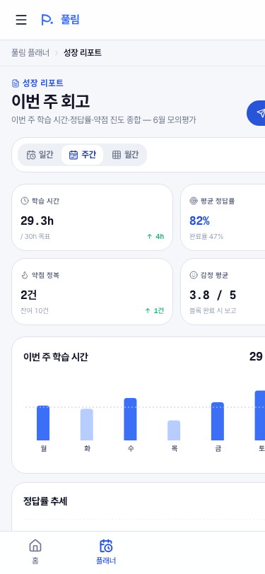
3-view cadence
- day:
TodayReflection defaultOpen— 오늘 결과 즉시 노출. (audit #8 spacing 강화, 2026-05-18) - week:
WeeklySummary— 학습 시간·정답률·약점 진도. default view. - month:
MonthlySummary— D-day까지 마일스톤 점검. - view 전환은
track('reports_view_change', { from, to })로 analytics 기록 (PR #13).
왜 "부모님께 보내기"가 헤더 액션인가
- 풀림 페르소나에 부모가 1순위 stakeholder — 학생의 학습 결과를 부모에게 매주 공유하는 cadence.
- CTA 클릭 →
ConsentDialog동의 흐름. 학생 자율로 "공유 여부"를 결정. track('reports_parent_card_open')로 CTA 노출/클릭 funnel 측정.
audit #8 — TodayReflection 정보감 강화 (오늘)
- dogfood 피드백 "비어 보임" → spacing/padding/font 4건 격상 (PR #15)
- Metric padding
p-2.5 → p-3, valuetext-base → text-lg, bodyspace-y-4 → space-y-5, 블록 리스트space-y-1 → space-y-1.5 - reports day + home day 둘 다 사용처라 양쪽 동일 개선
전반 디자인 원칙 정리
홈에서 "다음 블록 hero · 컨디션 슬라이더 · 번아웃 카드"가 좌측 컬럼에 묶여 첫 시야 점유. 시간표(시계)는 시각 메타포로 그 옆.
day/week/month 모두 xl:grid-cols-[420px_1fr]. ≤ xl에서 1열 fold. 좌측은 "시간 점유 시각화", 우측은 "이번 단위 메트릭·실행". 뷰 토글 흔들림 0.
컨디션 → 블록 난이도 ±20%. 번아웃 → 휴식 제안. 오늘 결과(정답률·감정·시간) → 내일 자동 반영. 회고 페이지는 그 cadence를 가시화.
모든 블록에 학습과학 엔진 태그. 태그 클릭 → "왜 이 엔진?" 원리 모달. 결정의 근거가 사용자에게 항상 열림.
학습과학 결정 8개를 1화면 1~2 결정으로 쪼갬. step indicator · prev/next · 미리보기. 단계마다 인지 부하 최소.
visual dead-space 발견 시 작은 PR로 정리 — 5/14 timeline trim, 5/15 dead-end 정리, 5/18 builder min-h + reports 정보감. 4일 연속 풀스택.
후속 개선 후보 (다음 audit 풀)
- weekly-summary mobile — 모바일 메트릭 그리드 squeeze (Mid · ~20m · ★★)
- 카드 컬러 토큰화 — palettes.ts vs hardcoded class 단절 (Mid · ~50m · ★)
- onboarding 완료 플래그 — MVP 범위 외, 상태 관리 layer 필요 (Low · ~40m · ★)
- weekly chart bar_week 중복 제거 — 이미 hide 분기 있음, 다른 layout과 일관성 검증 후속
- ribbon 정보 표시 룰 재정의 — TodayReflection collapsed 상태 메트릭 노출 옵션 (별 plan)
https://pullim-planner.vercel.app (2026-05-18 시점, commit bcec55b) · Chrome headless 1280×800 / 375×812.이 문서는 정적 분석이며, mock data 기준 화면 상태를 반영한다. 실 사용자 데이터 결합 시 화면 정보 밀도는 달라질 수 있다.
탐색: ← → 화살표 키 또는 상단 navigation 버튼.